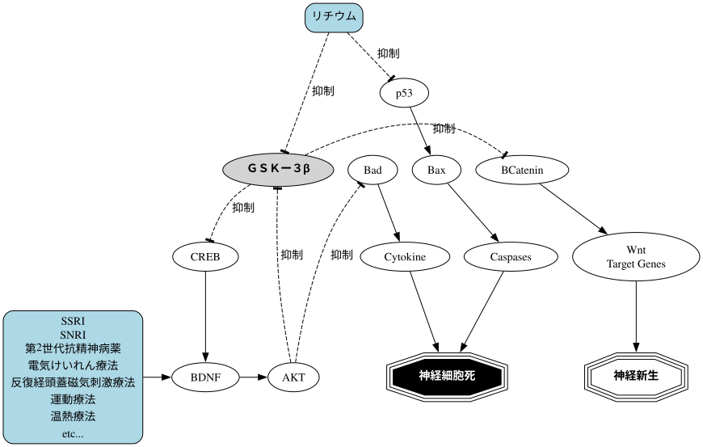

今日の日記ではうつ病治療におけるお薬の話をします。もちろん主治医からあった説明や同じ病院の先生方が講演等で話されている内容です。間違った理解はしていないはずですが、内容をご利用の際は念のために確からしさをご自身の主治医にも必ずご確認ください。統合失調症の方も関係します。おそらくは他の精神科領域の疾患の方も。
私が通院している精神科単科病院では、二十数年に渡って抗鬱剤や抗精神病薬の単剤化を進めています。それには以下のような理由があります。
今日の日記では 3 の現代の抗うつ剤や第 2 世代抗精神病薬、リチウムがどのように脳を修復するのか概説します。患者なのであまり詳しくは説明できませんが、この程度の概略であっても知っておいて損はないかと思います。
下に医師に処方される薬がどこに、どのように作用するのかを表わす概略図を示します。

上の図を描きあげるのにまる 1 日をかけてしまったので、続きは明日以降書きます。